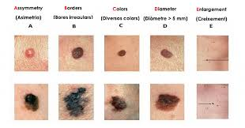

Tipos de cáncer de piel
El cáncer de piel se origina cuando ciertas células de la piel comienzan a crecer de manera anormal. Los tipos m�s frecuentes son el carcinoma basocelular, el carcinoma de c�lulas escamosas y el melanoma, siendo este �ltimo el m�s peligroso debido a su r�pida propagaci�n. tipos
| Tipo | Caracter�sticas | Ubicaci�n frecuente | Tratamiento |
|---|---|---|---|
| Carcinoma basocelular | De crecimiento lento, rara vez se disemina, puede parecer una herida que no cicatriza. | Zonas expuestas al sol como cara, cuello y brazos. | Cirug�a, crioterapia, tratamientos t�picos o terapia fotodin�mica. |
| Carcinoma espinocelular | M�s agresivo que el basocelular, puede propagarse si no se trata a tiempo. | Rostro, orejas, labios y dorso de las manos. | Extirpaci�n quir�rgica, radioterapia, o medicamentos t�picos. |
| Melanoma | El tipo m�s peligroso, puede desarrollarse en lunares existentes o piel normal. | Puede aparecer en cualquier parte del cuerpo, incluso donde no hay exposici�n solar. | Cirug�a inmediata, inmunoterapia, quimioterapia o terapias dirigidas. |
Ante cualquier cambio en la piel o aparici�n de lesiones nuevas, se recomienda consultar a un dermat�logo.